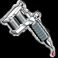
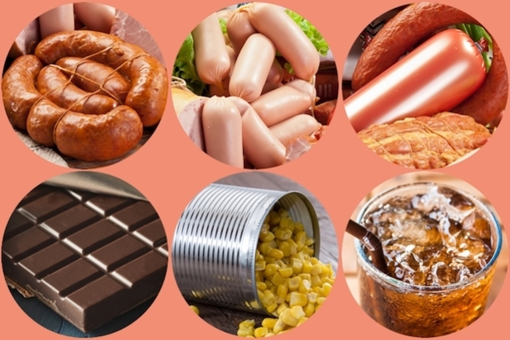

Maycon Tattoo Studio

Cuidados com a tatuagem
O que não comer depois de fazer uma tatuagem
Os alimentos remosos são aqueles ricos em gordura e que podem causar inflamações na pele e interferir no processo de cicatrização.
Assim, a alimentação após a realização de uma tatuagem, por exemplo, é importante para reduzir o risco de inflamação, acelerar a cicatrização e deixa-la mais bonita.
Lista de alimentos remosos
Os alimentos remosos são aqueles ricos em gorduras hidrogenadas, óleos refinados, açúcares e sal, como:
I. Refrigerantes e sucos prontos;
II. Frituras, como batata frita, pastel e outros salgados, fast food;
III. Carne de porco e carnes processadas, como salsicha, presunto, linguiça, bacon, mortadela e salame;
IV. Doces, biscoitos recheados, bolos, massas prontas para bolos, chocolates, barras de cereal;
V. Macarrão instantâneo, caldo de carne em cubo, comida pronta congelada, sorvetes;
VI. Bebidas alcoólicas.
Agende já sua tattoo
O consumo excessivo desses alimentos aumenta a inflamação e dificulta o processo de cicatrização da pele, podendo também levar a outros problemas de saúde como dores de cabeça, colesterol elevado e diabetes.
O que não comer após a tatuagem
As recomendações após a tatuagem devem ser seguidas, uma vez que o processo de realização de uma tatuagem é caracterizado por pequenas lesões múltiplas na pele e, caso não se tenha cuidado, poderá resultar em um processo inflamatório muito grave.Assim, é importante evitar o consumo de alimentos gordurosos, carne de porco, frutos do mar, chocolate e bebidas alcoólicas pelo menos 1 semana e meia após a realização da tatuagem.
O que comer para acelerar a cicatrização
Para acelerar o processo de cicatrização da pele, deve-se consumir alimentos ricos em antioxidantes e compostos anti-inflamatórios, como o ômega-3. Dentre os alimentos mais antioxidantes estão: tomate, frutas vermelhas, frutas cítricas como laranja e acerola, e ervas como alho, cebola e açafrão.
Já os alimentos anti-inflamatórios são aqueles ricos em gorduras boas como castanhas, abacate, salmão, atum, sardinha, azeite, amendoim, linhaça, chia e gergelim.
Cuidados com a tatuagem
Além de cuidar da alimentação para garantir a renovação adequada da pele com a tatuagem, também é necessário tomar outros cuidados como lavar o local com sabonete antisséptico por pelo menos 2 semanas, evitar tomar sol e não entrar no mar ou na piscina por pelo menos 2 meses, caso contrário a região da pele poderá ficar irritada e haver inflamação.